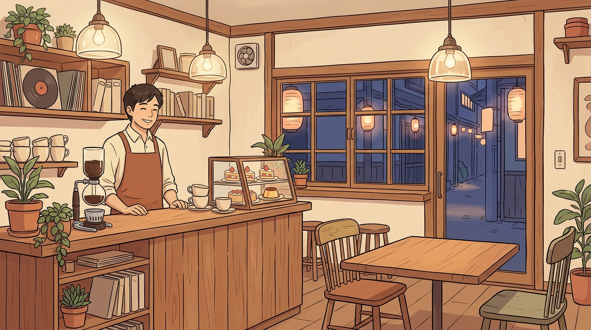

Peça cafés e doces japoneses usando seus pontos do Salão — eles são servidos direto na sua mesa! Toque no item servido para saborear.
Exercício fixo de cafeteria: comece escolhendo a mesa e leve a conversa com o Master até a conta!